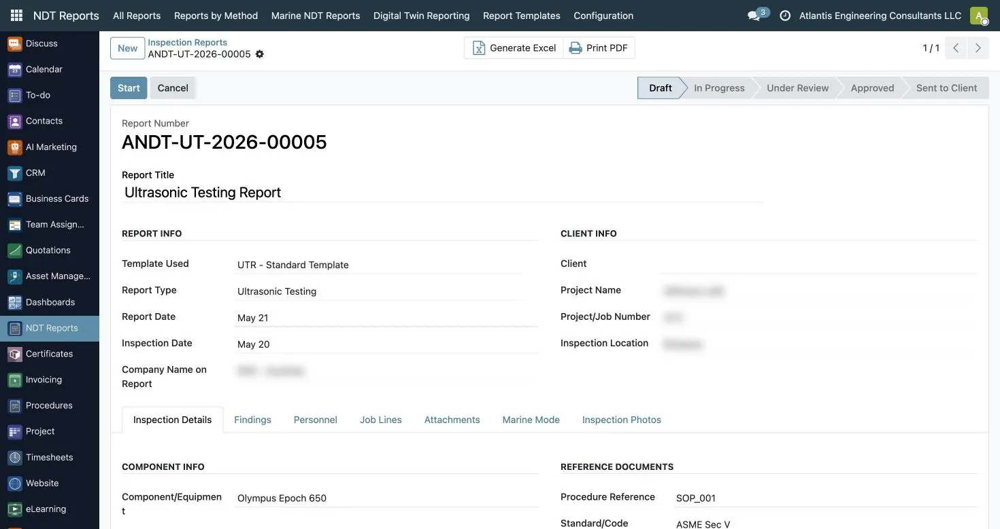
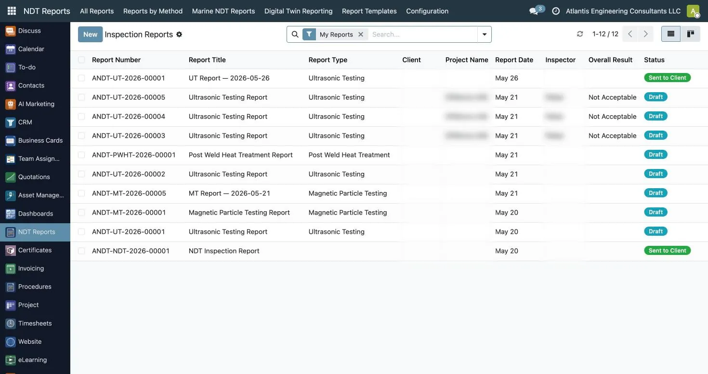
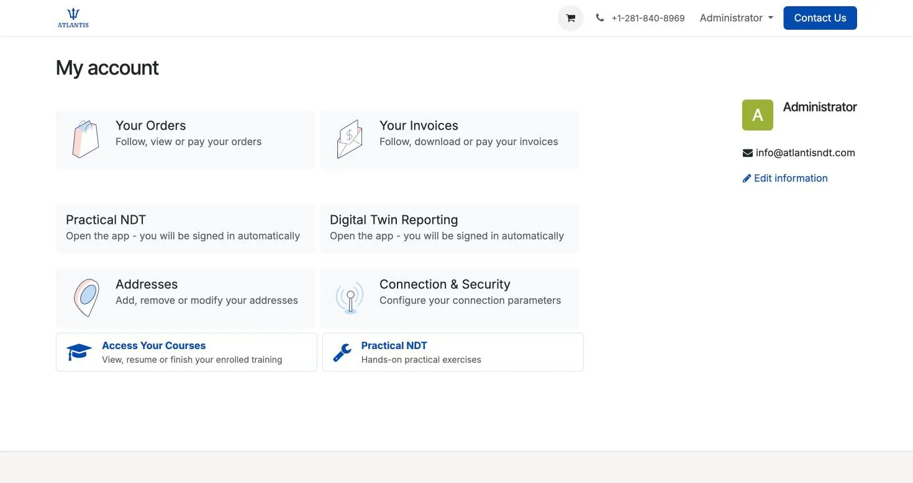
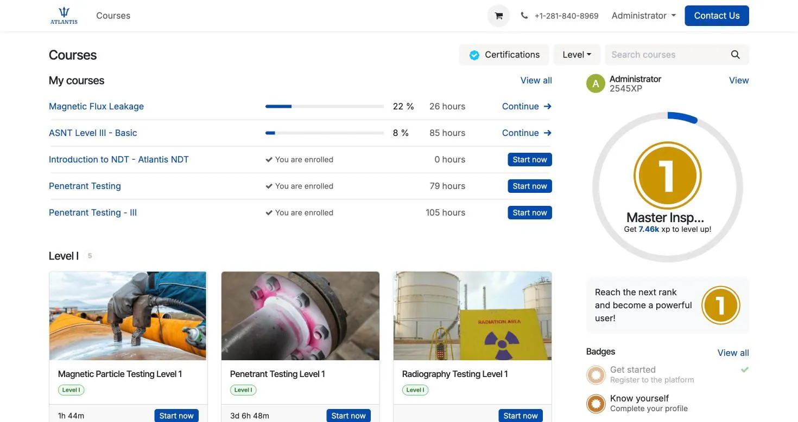
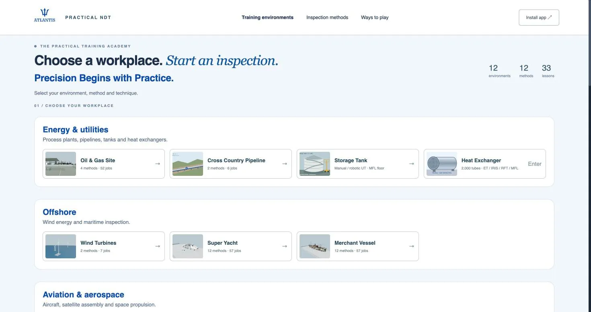
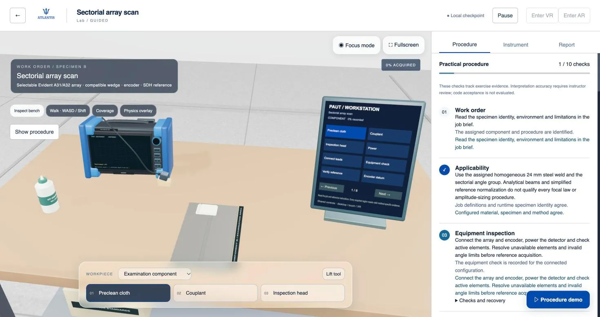

Atlantis NDT ERP directory submission pack
Prepared 12 October 2026. Final listing copy and media. No vendor profile has been submitted.
Product and business details
| Field | Value |
|---|
| Product | Atlantis NDT ERP |
|---|
| Vendor | Atlantis NDT |
|---|
| Website | https://atlantisndt.com/erp |
|---|
| Free trial | Yes, 14 days; access and setup agreed before starting |
|---|
| Trial URL | https://atlantisndt.com/free-trial |
|---|
| Pricing | Quote on request; published USA and Canada plans at https://atlantisndt.com/erp/pricing |
|---|
| Deployment | Cloud or customer-hosted, subject to agreed scope |
|---|
| API and integrations | Open REST API; third-party connections scoped per implementation |
|---|
| Support | info@atlantisndt.com; +1 281-840-8969 |
|---|
| Location | Houston, Texas, United States; Hyderabad, India |
|---|
| Company size, founding year, support hours | Leave optional fields blank until verified |
|---|
| Category candidates | NDT software; inspection management; business management for inspection service companies |
|---|
Short description
NDT inspection company software for reports, certification records, equipment calibration, dispatch and connected business workflows.
Full description
Atlantis NDT ERP connects the records an inspection company needs to manage a job. Method-specific NDT reports move through review and approval, while technician certification and equipment calibration records support planning and traceability. Quotations, projects, assignments, timesheets, invoicing, a client portal and learning workflows can be configured together. The system is implemented by Atlantis NDT, whose founder is an ASNT NDT Level III in UT, RT, MT, PT and VT. A guided walkthrough and a 14-day free trial are available. Trial access and setup are agreed before the evaluation starts. Plan features and connected products vary by subscription and agreed configuration. An open REST API supports technically scoped integrations; availability of a named third-party connector is confirmed during scoping. Compare published United States and Canada plans on the website, or request a quote for your region and requirements.
Submission destinations
Use free listing options only. Confirm the actual form’s terms before account creation or submission. Do not buy promotion, reviews or advertising.
Ready media
The product captures already blur client, project and inspector details. LMS and Practical NDT screenshots illustrate connected products; do not describe them as included in every plan.
Product logo · SourceForge cover

erp ndt report workflow · 1470 × 779
erp inspection reports list · 1470 × 779
client portal home · 1470 × 779
lms courses dashboard · 1470 × 779
practical ndt academy · 1470 × 779
practical ndt paut workstation · 1470 × 779Prepared editorial email
Recipient: the verified editorial contact shown by OneStopNDT at submission time. Subject: Atlantis NDT ERP for your NDT software coverage.
Hello OneStopNDT team,
Would you consider Atlantis NDT ERP for your software coverage? It connects NDT reports, technician certification records, equipment calibration, dispatch and business workflows for inspection companies.
You can review the product at https://atlantisndt.com/erp and request a guided walkthrough or 14-day trial at https://atlantisndt.com/free-trial. I can supply real screenshots with client details blurred.
Please let me know your editorial requirements. We are seeking editorial evaluation, with no paid placement requested.
Anoop Rayavarapu
Founder, Atlantis NDT
ASNT NDT Level III (UT, RT, MT, PT, VT)
info@atlantisndt.com
Review invitations
After a listing is live, invite verified customers who use the product to share honest feedback. Ask consistently, without selecting only satisfied users, suggesting ratings, or offering a reward. Do not use employees or invented customer reviews.